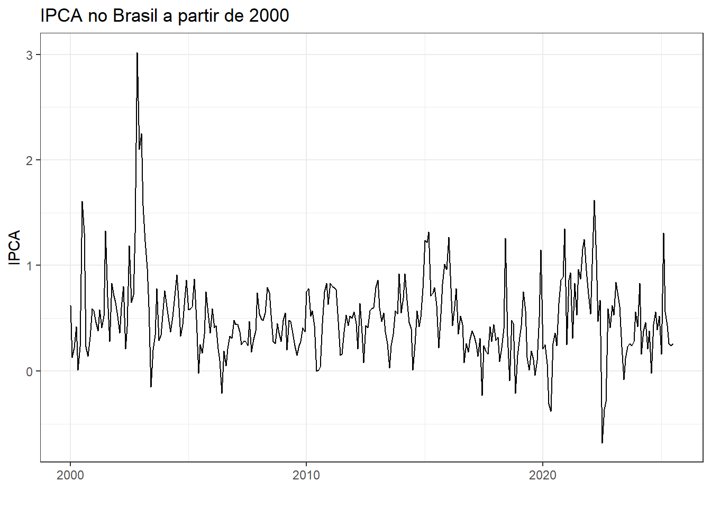
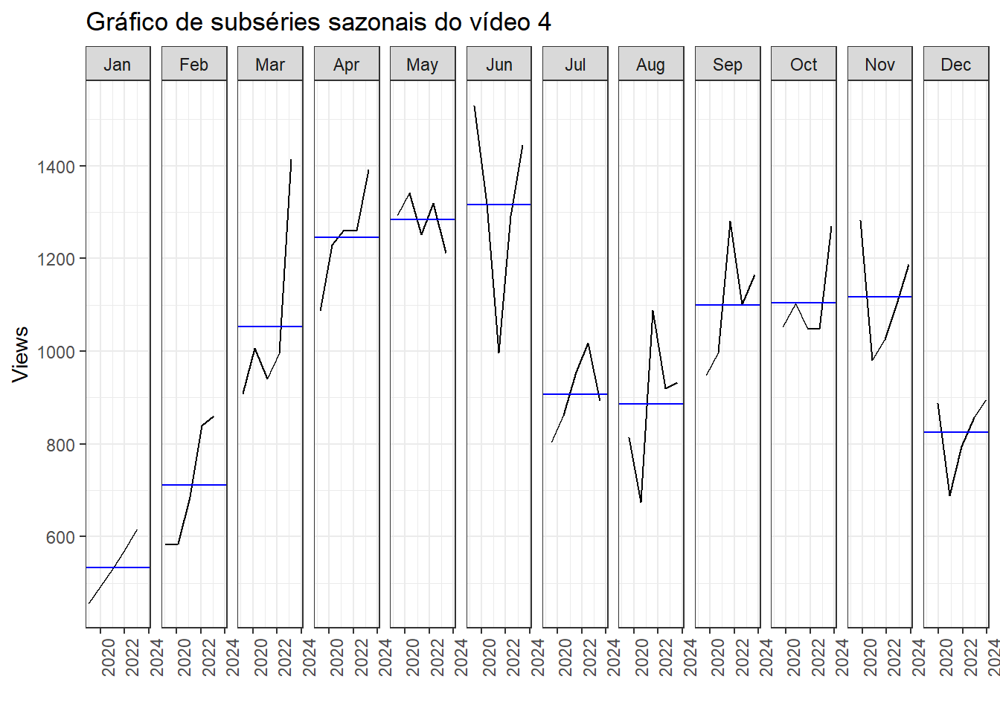
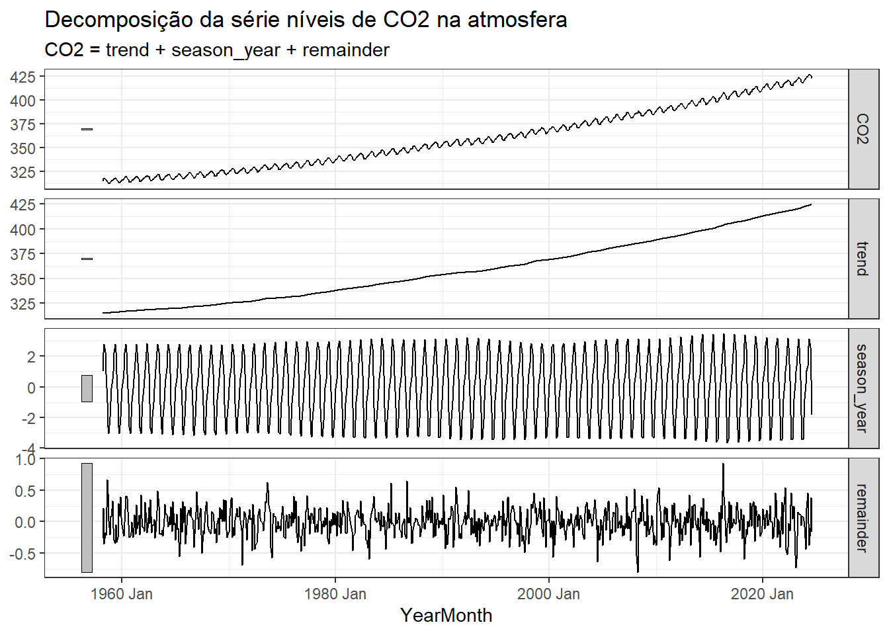

| index | value |
|---|---|
| 1980 Feb | 4.62 |
| 1980 Mar | 6.04 |
| 1980 Apr | 5.29 |
| 1980 May | 5.70 |
| 1980 Jun | 5.31 |
| 1980 Jul | 5.55 |
1 Introdução e gráficos
1.1 Introdução às séries temporais e previsão
Uma série temporal consiste em um conjunto de observações de uma variável aleatória ordenadas no tempo. Uma série temporal pode ser descrita matematicamente como \(y_1, ..., y_T\), onde \(T\) consiste no último período da série. A análise de séries temporais visa o estudo e obtenção de modelos preditivos para este tipo de dados. O objetivo ao final é realizar previsões com o modelo obtido, de forma a viabilizar ações de planejamento, prever cenários e possibilidades.
A previsão é importante em diversos contextos das engenharias, administração e ciências. Por exemplo, para decidir o nível de produção e planejar o próximo período é necessário prever a demanda. Para avaliar se um investimento é viável é importante prever a sua rentabilidade. Para planejamento dos sistemas energéticos é importante prever o consumo de energia. Para prever a capacidade de produção de energia hidroelétrica é preciso prever a precipitação.
Neste curso serão apresentados diversos modelos para análise e previsão de séries temporais, sendo boa parte dos exemplos obtidos de casos brasileiros. Serão consideradas séries de dados de produção, indústria, agricultura, clima, energia, economia, investimentos, mobilidade, transporte, saúde, entre outros.
1.2 Exemplos de séries e visualizações
1.2.1 Séries univariadas
Na Figura 1.1 observa-se graficamente a série temporal do índice de preços ao consumidor (IPCA), com frequência mensal a partir de 1980. A série foi obtida em Ipeadata. As primeiras observações da série também são exibidas na Tabela 1.1. Observa-se claramente como a inflação no país foi controlada a partir da adoção do plano real.

Para visualizar melhor como o IPCA variou nos últimos 20 anos, pode-se selecionar os dados a partir do ano 2000. O resultado é plotado na Figura 1.2.

A Tabela 1.2 exibe as primeiras observações da série temporal de volume de carros produzidos no Brasil a partir de 1990. A série foi obtida em dados estatísticos ANFAVEA e apresenta frequência mensal.
| data | valor |
|---|---|
| 1990-02-01 | 57258 |
| 1990-03-01 | 32740 |
| 1990-04-01 | 32812 |
| 1990-05-01 | 58464 |
| 1990-06-01 | 37632 |
| 1990-07-01 | 43697 |
A série é plotada na Figura 1.3. Pode-se observar alguns períodos de queda no volume, por exemplo, próximo de 2015 durante a crise política do país e em 2020 durante a pandemia, onde a demanda chegou a níveis anteriores aos dos anos 2000.

A Figura 1.4 apresenta a série temporal de níveis de \(CO_2\) na atmosfera medida no Observatório Mauna Loa, Havaí, desde 1958, Climate Change - NASA). Observa-se um padrão de crescimento não linear com ciclos sazonais bem definidos.

A Figura 1.5 plota a série a partir de 2020. Pode-se observar que os períodos sazonais de pico coincidem com o fim doinverno no hemisfério norte, enquanto os vales são observados no período de crescimento das plantas, as quais capturam parte significativa do \(CO_2\) da atmosfera.
1.2.2 Séries temporais multivariadas
Na Tabela 1.3 são exibidas apenas as primeiras observações de séries de produção de quatro tipos de energia para o ano de 2023 no Brasil. Os dados são fornecidos em frequência horária e estão disponíveis em Dados abertos do operador nacional do sistema elétrico.
| din_instante | name | value |
|---|---|---|
| 2023-01-01 00:00:00 | hidraulica | 39057.309 |
| 2023-01-01 00:00:00 | termica | 5698.335 |
| 2023-01-01 00:00:00 | eolica | 14138.750 |
| 2023-01-01 00:00:00 | solar | 21.155 |
| 2023-01-01 01:00:00 | hidraulica | 39624.650 |
| 2023-01-01 01:00:00 | termica | 5727.550 |
A série temporal multivariada é plotada na Figura 1.6. Pode-se observar a queda de produção da fonte hidráulica no período mais seco do ano, além da tendência de aumento da energia solar a partir de maio.

A mesma série temporal é plotada na Figura 1.7 para o mês de dezembro de 2023. De forma geral é possível ver o padrão cíclico diário de consumo considerando a sazonalidade diária com maior consumo durante o dia e menor durante a noite.

Outro exemplo de série multivariada de índices de produção de bens de capital, de consumo duráveis, intermediários e de consumo não duráveis é plotada na Figura 4.5, porém em painéis separados. A série foi obtida em Pesquisa industrial mensal - produção física do IBGE. Essa visualização é útil, uma vez que possibilita avaliar melhor o padrão e variabilidade de cada série, permitindo ajustar a escala de cada série de forma individual.

As últimas observações de mais um exemplo de série temporal multivariada são observadas na Tabela 1.4 considerando dados de visualizaçoes de 4 vídeos da playlist Tolerâncias e ajustes do canal da engenharia de manufatura e qualidade.
| Date | Views | Video |
|---|---|---|
| 2024-09-15 | 15 | #4 |
| 2024-09-16 | 35 | #4 |
| 2024-09-17 | 38 | #4 |
| 2024-09-18 | 27 | #4 |
| 2024-09-19 | 40 | #4 |
| 2024-09-20 | 26 | #4 |
A série multivariada é plotada na Figura 1.9. A série inicia em 2018, ano de início do canal, porém só tem dados segundo a data de lançamento de cada vídeo.

A série do vídeo 4 a partir de setembro de 2018 é exibida na Figura 1.10.
1.2.3 Graficos de sazonalidade
Pode-se visualizar os dados da série do vídeo 4 em subséries anuais, de forma a ver a sazonalidade presente nos dados. A Figura 1.11 expõe o gráfico. Os dados foram agregados mensalmente. Pode-se visualizar os picos de visualizações de Abril a Junho e de Setembro a Outubro, coincidindo com períodos de picos de estudos nos dois semestres anuais.

Pode-se plotar o gráfico sazonal visualizando a variação anual dentro de cada mês, conforme Figura 1.12.

O gráfico sazonal também pode ser útil no caso da série de emissões de CO2, conforme Figura 1.13. Observa-se claramente a sazonalidade com pico próximo de maio e declínio próximo de outubro. A tendência de aumento anual de emissões também fica clara na escala de cor que, neste caso, identifica o ano.

O gráfico de subséries sazonais, plotado na Figura 1.14, deixa clara a tendência de aumento de emissões desde o início da série, independente do mês e a sazonalidade com pico em maio e vale em outubro.
1.2.4 Correlação entre séries
A Figura 4.6 exibe diagramas de dispersão e correlações aos pares para a série multivaria de produção de bens exposta na Figura Figura 4.5. Pode-se confirmar a alta relação linear entre tais índices, com correlação linear positiva variando de 0,70 a 0,84.
1.2.5 Gráficos de decomposição
Existem diversas formas de decompor séries temporais. A Tabela 1.5 expõe os resultados de uma decomposição aditiva da série CO2. A componente cíclica é removida e o restante é suavizado para encontrar uma tendência. O resíduo consiste na diferença entre a série original e a soma da tendência e da componente sazonal.
| CO2 | trend | season_year | remainder | season_adjust |
|---|---|---|---|---|
| 315.71 | 314.9477 | 1.0263767 | -0.2640423 | 314.6836 |
| 317.45 | 315.0187 | 2.2221543 | 0.2091377 | 315.2278 |
| 317.51 | 315.0898 | 2.7703197 | -0.3500701 | 314.7397 |
| 317.27 | 315.1608 | 2.2787986 | -0.1695914 | 314.9912 |
| 315.87 | 315.2266 | 0.8557299 | -0.2123500 | 315.0143 |
| 314.93 | 315.2924 | -1.0241591 | 0.6617119 | 315.9542 |
A Figura 1.16 expõe o resultado da decomposição da série de emissões de CO2. Observa-se claramente a separação da tendência e do padrão sazonal da série, facilitando a interpretação desta.

1.2.6 Gráficos de previsão
A Figura Figura 4.16 exibe a série de temperatura instantânea na cidade de São joão del-Rei dos dias 15 a 28 de maio. Os dados foram obtidos em Instituto Nacional de Meteorologia. Observa-se que a série plotada em cor preta exibe comportamento cíclico dado a variação diária entre a temperatura mínima, que varia de 8 a 13 ºC, e a máxima diárias, que gira em torno de 25 a 28 ºC no período. Também é possível observar uma tendência de aumento na temperatura nos dias considerados. A Figura expõe a previsão para dois dias à frente em azul, com intervalos de confiança de 80 a 90%.
1.3 Implementação em R
A seguir apresenta-se boa parte da implementação na linguagem R para obter os dados, gráficos e análises expostos no presente capítulo. Os dados utilizados estão disponíveis em Previsão, por Robson Bruno Dutra Pereira.
Carregando pacotes.
library(rbcb)
library(forecast)
library(dplyr)
library(tidyr)
library(ggplot2)
library(lubridate)
library(fpp3)
library(GGally)
theme_set(theme_bw())Série temporal do IPCA obtida usando o pacote rbcb.
ipca <- get_series(c(IPCA = 433), as = "ts")
ipca_ts <- as_tsibble(ipca, index = index)
head(ipca_ts)Visualizando a série.
ipca_ts |>
autoplot(value) + labs(x="", y="IPCA",
title="IPCA no Brasil")Vizualizando a série a partir de 2020.
ipca_ts |>
filter(year(index) >= 2020) |>
autoplot(value) +
labs(x="", y="IPCA",
title="IPCA no Brasil a partir de 2020")Série de volume de produção de carros no Brasil.
carros <- read.csv("vendas_veiculos.csv",
sep=";")
carros_ts <- carros |>
mutate(data = as.Date(data, format = "%d/%m/%Y")) |>
as_tsibble(index=data)
head(carros_ts)Visualizando a série.
carros_ts |>
autoplot(valor) +
labs(x="", y="Carros produzidos",
title="Produção de carros no Brasil")Série multivariada de produção de energia em 2023 no Brasil.
energia_2023 <- read.csv("BALANCO_ENERGIA_SUBSISTEMA_2023.csv",
header=T, sep=";")energia_2023_ts <- energia_2023 |>
filter(id_subsistena == "SIN") |>
rename_with(~ tolower(gsub("val_ger", "", .x))) |>
mutate(din_instante =
as.POSIXct(din_instante,
format = "%Y-%m-%d %H:%M:%S")) |>
as_tsibble(index = din_instante) |>
select(!c(id_subsistena, nom_subsistema,
val_carga,val_intercambio)) |>
pivot_longer(!din_instante)
head(energia_2023_ts)Visualizando a série.
energia_2023_ts |>
autoplot(value, alpha = 0.5) +
labs(y="Energia (MWh)", x="",
title="Produção de energia no Brasil em 2023")Série de índices de produção de bens de consumo.
prod <- read.csv("Producao_bens.csv",
header=T)
prod$Data <- yearmonth(seq(as.Date("2002/1/1"),
length=271,
by="month"))
prod <- prod |>
pivot_longer(cols=capital:nao_duraveis)
prod_ts <- prod |>
as_tsibble(key=name, index=Data)Visualizando em painéis separados.
prod_ts |>
autoplot(value) +
facet_wrap(nrow = 4, ~name, scales="free_y") +
guides(colour="none")Correlação entre séries.
df_prod <- prod_ts |>
pivot_wider(names_from=name,
values_from=value)
ggpairs(df_prod, columns = 2:5)Série de emissão de CO2.
co2 <- read.csv("co2_mm_mlo.txt",
header=T,
skip=41,
sep="")
co2 <- co2[, 1:5]
colnames(co2) <- c("year", "month", "decimal.date",
"monthly.averaged",
"de-season.alized")
co2$Date <- as.Date(paste(co2$year, co2$month, "01",
sep="-"))
co2_ts <- tsibble(Date = co2$Date,
CO2 = co2$monthly.averaged,
index = Date)Visualizando a série.
co2_ts |>
autoplot(CO2) +
labs(y="CO2 [PPM]", x="",
title="Emissões de CO2")Gráfico sazonal.
co2_ts <- co2_ts |>
filter(!is.na(CO2))
co2_ts <- co2_ts |>
index_by(yearMonth = yearmonth(Date)) |>
summarise(CO2 = sum(CO2, na.rm=T))co2_ts |>
gg_season(CO2) +
labs(x="", y="CO2 [PPM]",
title = "Gráfico sazonal: emissões de CO2")Gráfico de subséries sazonais.
co2_tsibble |> gg_subseries(CO2) + labs(x="", y = "CP2 [PPM]") +
labs(title="Gráfico de subséries sazonais: CO2")1.4 Execícios propostos
Faça o gráfico da série temporal multivariada de produção de energia para o mês de dezembro de 2023.
Faça o gráfico anterior em painéis separados.
O código abaixo carrega os dados da série de visualização de vídeos do youtube. Obtenha o gráfico da série do vídeo 4.
tol <- read.csv("tolerancia_ajuste.csv")
tol_tsibble <- tol |>
mutate(Date = as.Date(Date, format = "%Y-%m-%d")) |>
as_tsibble(index = Date, key = Video)
tol4_tsibble <- tol_tsibble |>
filter(Video == "#4", year(Date) >= 2019,
year(Date)<2024)- O código abaixo acumula mensalmente as visualizações do vídeo 4. Obtenha os gráficos sazonais para a série mensal.
tol4_mensal <- tol4_tsibble |>
index_by(YearMonth = yearmonth(Date)) |>
summarise(Views = sum(Views))